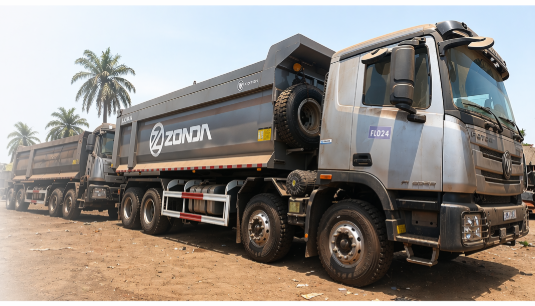

Mobilisation opérationnelle
Des équipes disponibles pour accompagner les rotations et répondre aux impératifs du terrain.

Des moyens adaptés, une supervision présente et une organisation capable de sécuriser chaque rotation, du chargement au reporting.
Parce qu’une opération logistique performante exige plus que des camions : elle demande une équipe responsable, réactive et mesurable.
Fastlane Logistic réunit la flotte, les chauffeurs, la supervision terrain et les outils de suivi nécessaires pour assurer la continuité des opérations minières et logistiques.
Notre approche repose sur une préparation rigoureuse, des contrôles réguliers et une communication claire. Chaque mission est organisée selon le corridor, le tonnage, les contraintes du site et les exigences contractuelles du client.
Des équipes disponibles pour accompagner les rotations et répondre aux impératifs du terrain.
Briefings, contrôles et suivi des consignes avant, pendant et après chaque mission.
Bons de transport, tonnages, consommations et rapports consolidés par période.
Une direction à Conakry et une base opérationnelle à Kolaboui, dans la préfecture de Boké.
Nous transformons les exigences contractuelles en un dispositif terrain clair, contrôlé et documenté.
Analyse du corridor, affectation des véhicules, planification des rotations et briefing des équipes.
Mobilisation coordonnée de la flotte et des chauffeurs selon les objectifs de production.
Contrôle des chargements, accompagnement des chauffeurs et traitement rapide des incidents.
Consolidation des bons, du tonnage, des consommations et des indicateurs de performance.
Nos engagements contractuels illustrent notre capacité à nous adapter à différents environnements opérationnels en Guinée.
Partenaire contractuel accompagné depuis notre base opérationnelle de Kolaboui, au plus près des besoins du terrain.
Partenariat opérationnelPartenaire contractuel accompagné avec une organisation adaptée aux exigences des opérations minières à Siguiri.
Partenariat opérationnelDes chauffeurs sensibilisés, des véhicules contrôlés et des pratiques alignées sur les exigences HSE.
Une planification réaliste, des rotations suivies et une capacité de réaction face aux aléas du corridor.
Des informations centralisées et des rapports compréhensibles pour faciliter la décision.
Présentez-nous vos volumes, vos itinéraires et vos contraintes opérationnelles.